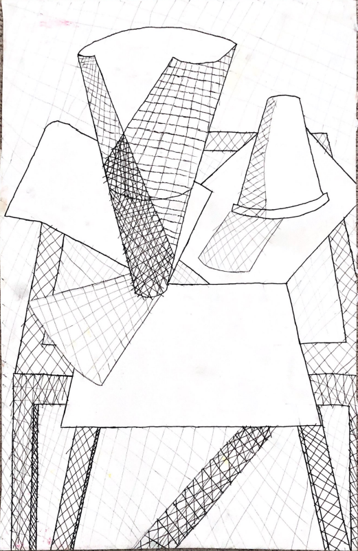

Still Life
Drawing of cups and papers on arranged on a table!
This one was a tough piece to make. I arranged a couple of papers and cups to form a unique setting for my work. Using some good hand-eye accuracy, I had to trace the image to match the formation in real life. It took a while to make, but I enjoyed it a lot in the end.